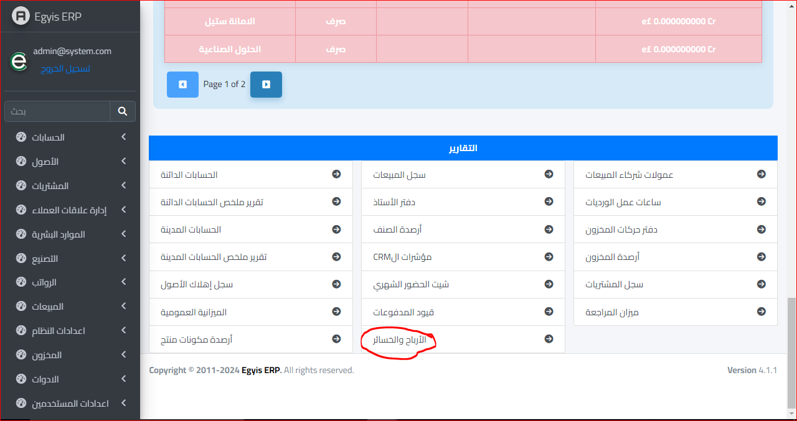
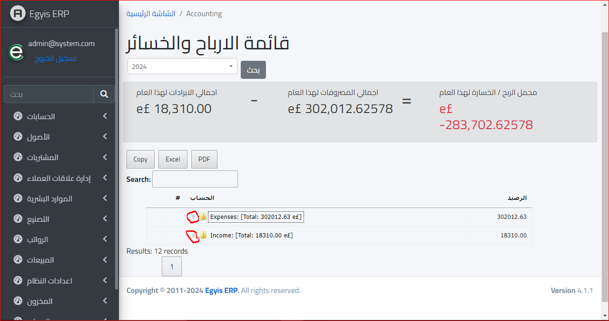
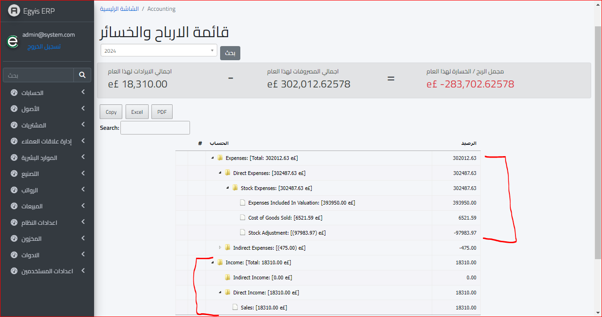
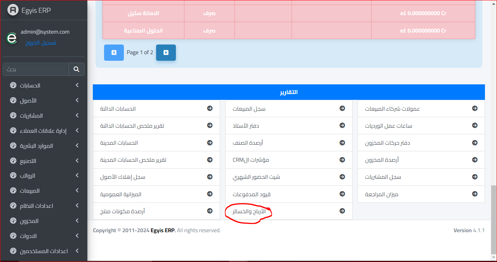
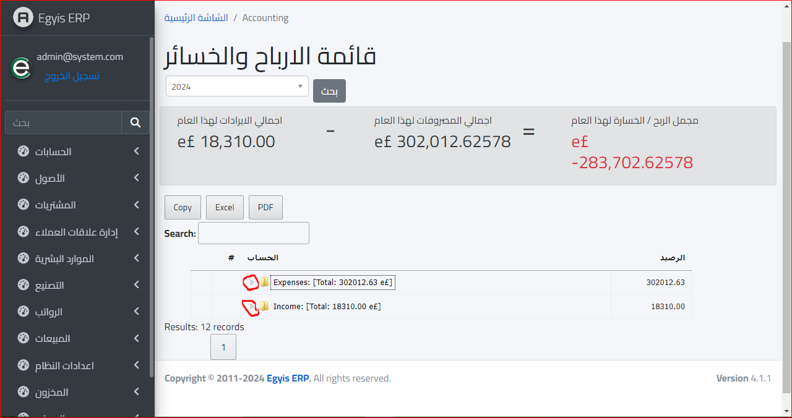
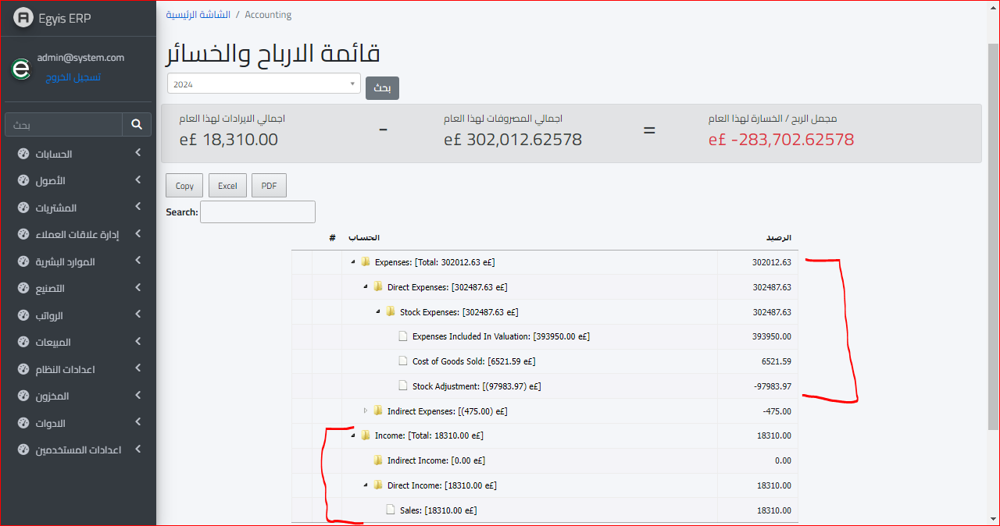

قائمة الارباح والخسائر
لفتح قائمة الارباح والخسائر يتم النزول لأسفل القائمة واختيار قائمة الارباح والخسائر :
وتظهر قائمة الارباح والخسائر بهذا الشكل :
وعند النقر على السهم سيتم اظهار تفاصيل الأرباح والخسائر :
لفتح قائمة الارباح والخسائر يتم النزول لأسفل القائمة واختيار قائمة الارباح والخسائر :
وتظهر قائمة الارباح والخسائر بهذا الشكل :
وعند النقر على السهم سيتم اظهار تفاصيل الأرباح والخسائر :
